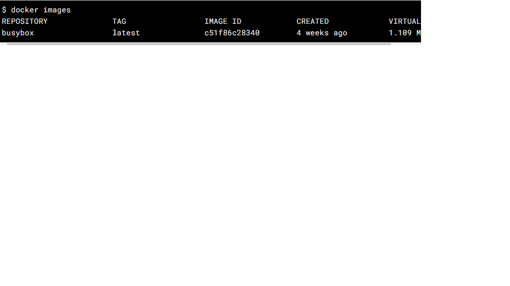

Docker is an open source containerization platform. Containerization is defined as a form of operating
system virtualization, through which applications are run in isolate user spaces called containers, all using
the same shared operating system. It enables developers to package applications
into containers-standardized executable components combining application source code with the operating system
libraries and dependecies required to run that code in any environment. Containers simplify delivery of distributed
applications, and have become increasingly popular as organizations shift to cloud-native development and hybrid
multicloud environments
Download Docker Here
In this section, we are going to run a Busybox container on our system and get a taste of the docker run command.
To get started run docker pull busybox, the pull command fetches the busybox image from the Docker registry and saves
it to our system. You can use the docker images command to see a list of all images on your system
